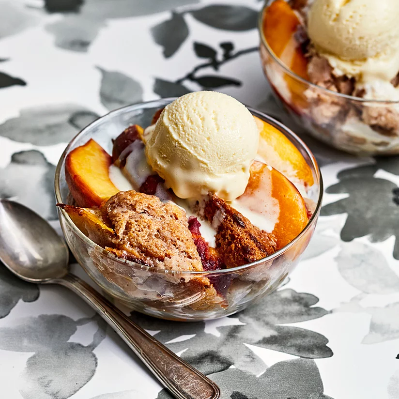

Peach Cobbler with Buttermilk Ice Cream

Even though I'm not a fan of the summer heat, eating a fresh peach cobbler is a very valid reason to look forward to the sunny season regardless. Not only is cobbler easy to make, you can whip up your own ice cream as the perfect complement!
This recipe will need about 30 minutes for prep time, 1hr 10 minutes for baking, and a minimum of 8 hours of refrigeration. It yields 1 9x13-inch cobbler.
Ingredients
Ice Cream:
- 12 large egg yolks
- 1 1/4 cups white sugar
- 2 cups heavy whipping cream
- 2 cups buttermilk
- 1 1/2 teaspoons vanilla bean paste
- 1/2 teaspoon salt
Cobbler:
- 2 pounds fresh peaches
- 1 cup self-rising flour
- 1/2 cup unsalted butter
- 1 cup self-rising flour
- 1 teaspoon salt
- 1 teaspoon ground cinnamon
- 1 cup half-and-half
- 1 teaspoon vanilla extract
- 1/4 teaspoon almond extract
Steps
- Whisk egg yolks and 1/4 cup sugar in a large bowl. Stir cream and remaining sugar together in a saucepan over low heat; bring to a simmer, about 12 minutes. Remove from heat. Slowly pour cream mixture into egg yolk mixture, whisking constantly.
- Return mixture to the saucepan; cook over low heat, whisking constantly, until thickened and bubbly. Strain mixture through a fine-mesh sieve into a bowl, then whisk in buttermilk, vanilla, and salt. Let cool completely, at least 30 minutes. Chill at least 4 hours or up to overnight.
- Pour mixture into an ice cream maker and freeze according to manufacturer's instructions, about 20 minutes. Transfer to an airtight container and freeze until firm, about 4 hours.
- Preheat the oven to 350 degrees F (175 degrees C) for the cobbler.
- Wash the fuzz off of the peaches and cut into wedges. Toss peach wedges with 1/2 cup sugar.
- Place butter in the bottom of a 9x13-inch casserole dish and melt it in the oven, 5 to 8 minutes.
- Meanwhile, mix together flour, remaining 1/2 cup sugar, salt, and cinnamon. Stir in half-and-half, vanilla, and almond extract to form a loose batter; pour into baking dish over melted butter. Do not stir. Spoon peaches evenly over batter, without stirring.
- Bake in the preheated oven until a toothpick inserted into the center comes out clean and peaches are tender, 45 to 50 minutes. Serve warm with ice cream.